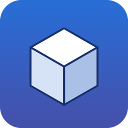
Draw your own things and print them. Or pick the parts for an electronics project, and WaughForm 3D designs a printable box to hold them, shows you how to wire them up, and writes the code to run them.
It all runs on your own computer. Only the optional AI features use the internet.
WaughForm 3D takes you from an idea to a finished, working gadget. Use as much or as little of it as you like: each step leads naturally into the next.
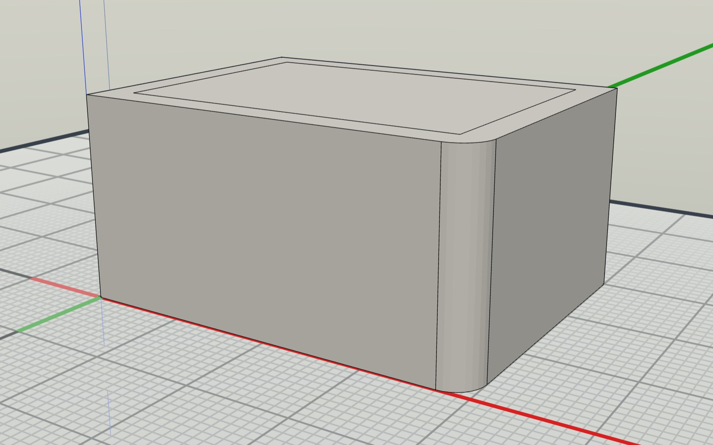
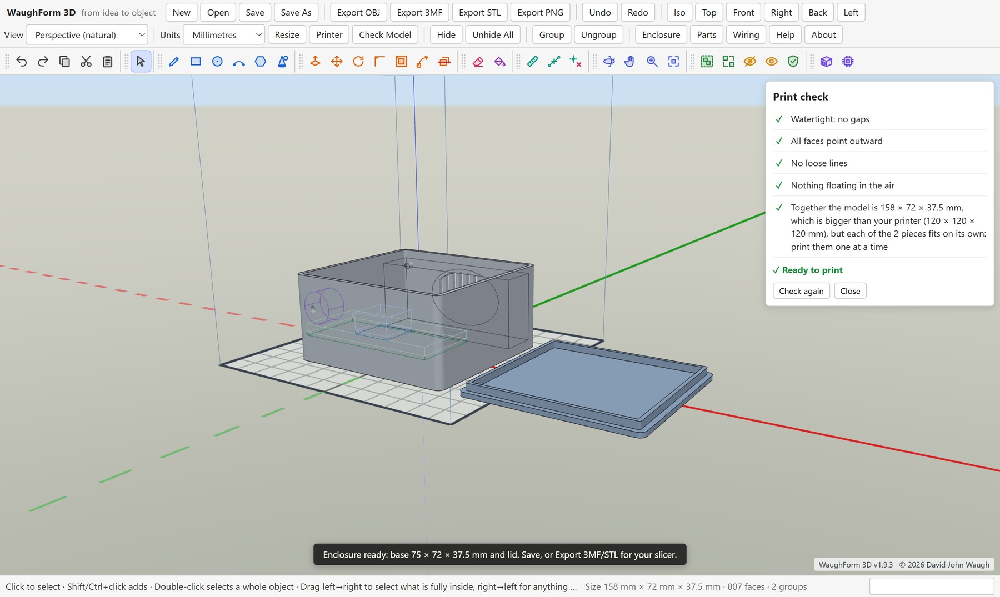
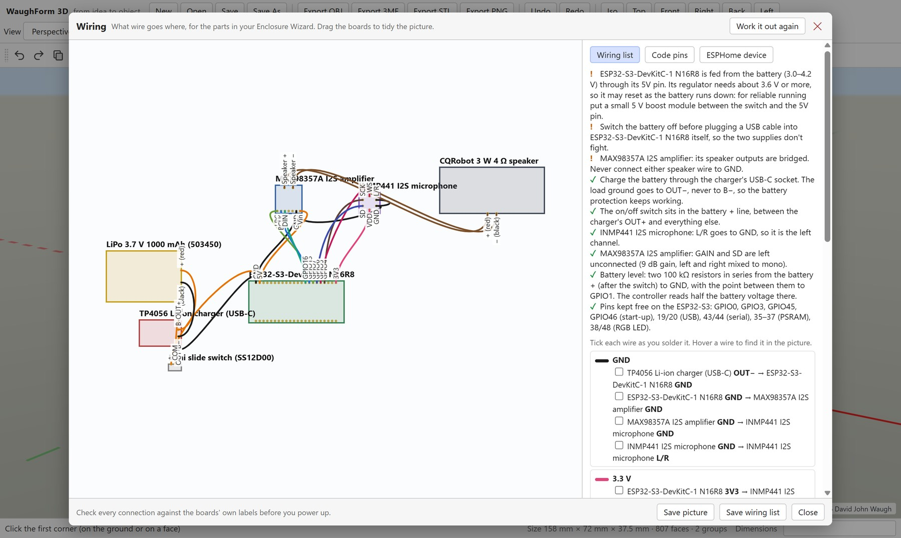
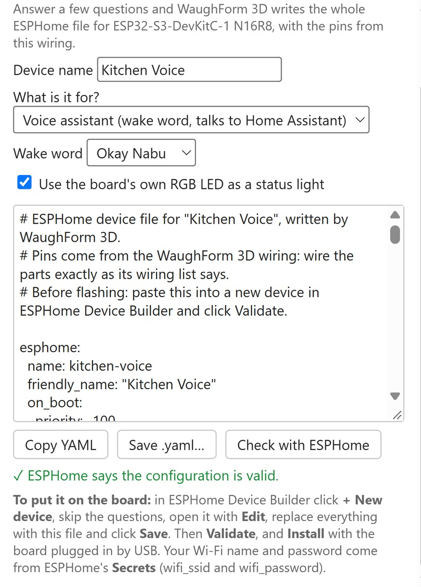
This manual follows the same path: drawing and printing first (chapters 5 to 7), then parts, the box, wiring and the code (chapters 8 to 12).
You will have one of two files. Either one is the whole program.
| File | What it does |
|---|---|
| WaughForm 3D Portable 1.6.1.exe | Just double-click it. Nothing is installed, so it also runs from a USB stick. |
| WaughForm 3D Setup 1.6.1.exe | Installs the program with a Start menu and desktop shortcut. Uninstall it from Settings › Apps. |
It needs Windows 10 or 11 (64-bit). Installing a newer version over an older one keeps your drawings, parts and settings.
The first time you run it, Windows may show a blue box, because the program isn't signed by a big company. Click More info, then Run anyway. You only need to do this once.
The file SHA256 checksums that comes with the program lists a long code for each .exe, like a fingerprint. If even one byte of the file is changed (by a virus or a broken download), the code comes out different.
.exe, click in the address bar at the top, type powershell and press Enter.Get-FileHash "WaughForm 3D Portable 1.6.1.exe" and press Enter.Click Printer on the top bar and pick your printer, or type its build size (X, Y and height Z, in mm). The grid then shows your bed, and the app warns you if anything is too big to print.
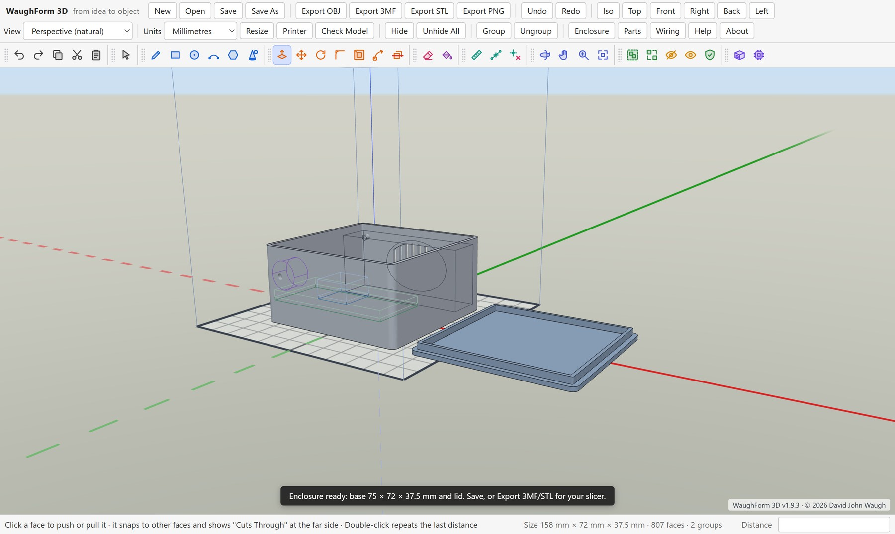
| Area | What it's for |
|---|---|
| Top bar | Files (New, Open, Save, Export), Undo/Redo, the view buttons (Iso, Top, Front…), Units, Resize, Printer, Check Model, Hide, Group, and the Enclosure, Parts, Wiring and Help windows. About shows which version you have. |
| Toolbar | The drawing tools, 3D Text, Shell, Hole, Flip and Lay flat (see chapter 5), then the view tools, Group/Ungroup, Join, Subtract, Intersect, Hide/Unhide, Check Model, Enclosure and Parts. The icons are coloured by kind (below). |
| 3D view | Your model on the printer bed. Red, green and blue lines are the X, Y and Z axes. The view cube in the top right corner turns with the view (see chapter 4). The History panel on the left lists every change, so you can go back several steps at once (see chapter 5). |
| Status bar | Left: a hint for the tool you're using. Right: the model's size, and the size box where numbers you type appear. |
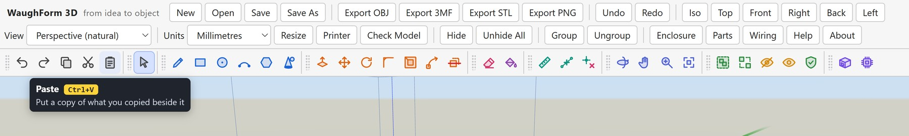
The icon colours tell you what kind of tool it is: blue draws (Line, Rectangle, Circle, Arc); orange changes shapes (Push/Pull, Move, Rotate, Round, Offset, Follow Me); red erases and purple paints; teal measures; indigo moves the view; green groups and checks; amber hides; violet opens the Enclosure Wizard and Parts Library.
Drag any toolbar button to a new place: the others slide aside and it snaps in. To move a whole group (for example all the blue drawing tools to the front), drag the dotted grip at the start of the group. Your order is remembered next time. To go back to the original order, right-click the toolbar.
Press F1 or click Help at any time for a quick guide to every tool.
| Mouse | What it does |
|---|---|
| Left button | Always belongs to the tool you've picked: it draws, pushes, moves… Click-click or press-drag-release both work. |
| Right button + drag | Orbit (turn the view) around whatever is under the mouse. |
| Right click | Opens the right-click menu (see below). |
| Middle button + drag | Pan (slide the view). Press the scroll wheel down and drag. |
| Scroll wheel | Zoom in and out, towards where the mouse points. |
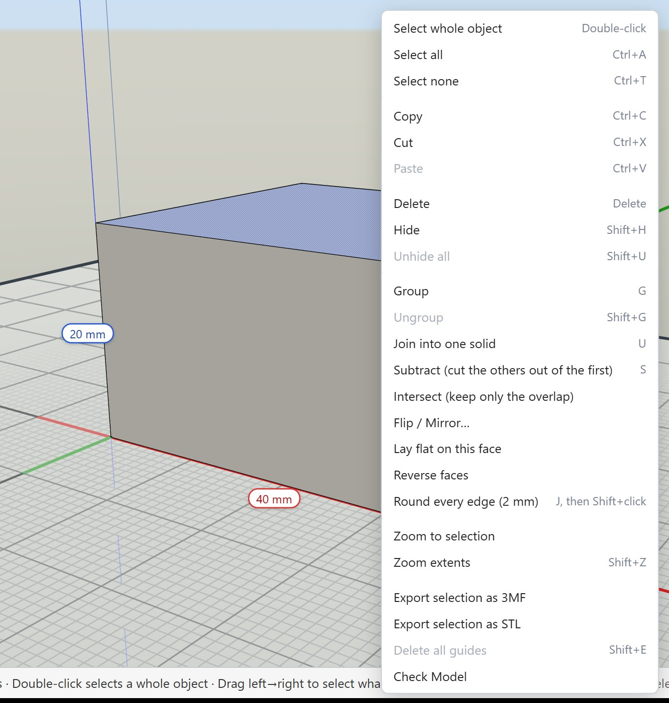
The cube in the top right corner always turns with your view, so you can see which way you're looking.
When you start a new, empty drawing, the cube waits in the middle of the screen and asks which side you want to draw on. Click a side, or Just start on the ground, and it moves out of the way into its corner.
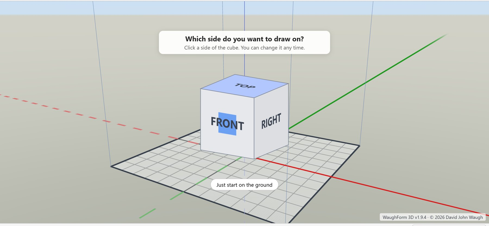
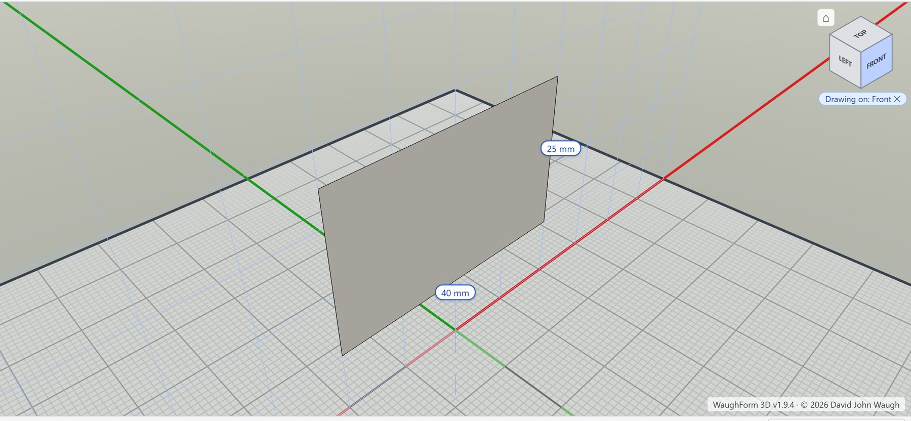
WaughForm 3D works like SketchUp: draw a flat shape, then pull it up into 3D.
40,30 and press Enter.15 and press Enter for exactly 15 mm.| Tool | Key | How to use it |
|---|---|---|
| Select | Space | Click to select; Shift-click to add. Double-click selects a whole object. Drag left→right to select what's fully inside the box; right→left to select anything the box touches. |
| Line | L | Click points; closing the loop makes a face. A line across a face splits it. Tracing the open edge of a hole fills it. |
| Rectangle | R | Two corners. Type width,depth for exact sizes. |
| Circle | C | Centre, then radius. Type a radius, or 36s to change the number of sides. |
| Arc | A | Click both ends, then move out to set the bulge and click (it snaps to a half circle). An arc drawn across a face cuts it in two. |
| Polygon | N | A hexagon, triangle or any straight-sided shape. Type 6s, 3s, 8s… for the number of sides, then centre and corner. |
| 3D Shapes | D | A ball, cone, cylinder or pyramid in one go (see below). |
| Push/Pull | P | Pull a face into 3D or push it in. Double-click repeats the last distance. Shift+click several faces first to push them all together (see below). |
| Move / Copy | M | Pick up and drop. Hold Ctrl to copy; then type 5x for five copies in a row. |
| Rotate | Q | Centre, starting angle, end angle (snaps every 15°). |
| Round / Chamfer | J | Click a line where two faces meet to round it off. Type 3 for 3 mm rounded, 3c for a 3 mm straight chamfer. Shift+click a box to round every edge at once. |
| Offset | F | Click a face, then move in or out: a copy of its outline that far inside or outside it. |
| Follow Me | W | Sweep a face along a selected path (see below). |
| Flip / Mirror | Flip the selection over, or add a mirrored copy beside it (see below). | |
| Lay flat | Click the face that should go down on the bed (see below). | |
| Shell | Hollow a solid out with walls of a set thickness (see below). | |
| Hole | Screw holes at printing sizes: clearance, tapped, heat-set insert, countersunk, counterbored, nut trap (see below). | |
| 3D Text | Raised or engraved lettering (see below). | |
| Slice | X | Cut a solid in two with a flat plane; move or delete either half (see below). |
| Eraser | E | Click a single line to remove just that line (faces either side join up). |
| Paint Bucket | B | Colour faces. |
| Tape Measure | T | Measure between two points; an orange guide point is left at the second. After the first click, type a distance (e.g. 40) for a guide point exactly that far along. Ctrl+click just measures. |
| Find Centre | K | Click two points; an orange centre point appears halfway, which every tool can snap to. |
| Delete guides | Shift+E | Removes all guide points when you've finished with them (toolbar: dashed cross with a red ✕). |
| Orbit / Pan / Zoom | O H Z | The same as the mouse controls, for people without a middle button. |
Every change you make is listed in the History panel on the left: Rectangle, Push/Pull, Circle, Join and so on, newest at the bottom.
Opening a file or starting a new drawing starts a new history. The last 300 steps are kept.
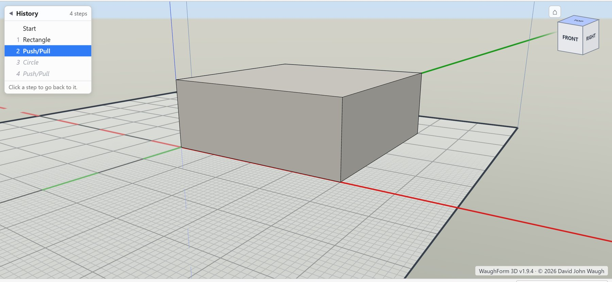
The shape you have just drawn, or the one you select, shows its sizes beside it: a rectangle its two sides, a circle or polygon its diameter (Ø), and a box its width, depth and height, coloured red, green and blue like the axes. Click a size, type the new one and press Enter. For example, if you drew a rectangle 22 mm long, click 22 mm and type 30. Esc leaves it as it was, and Ctrl+Z undoes a change.
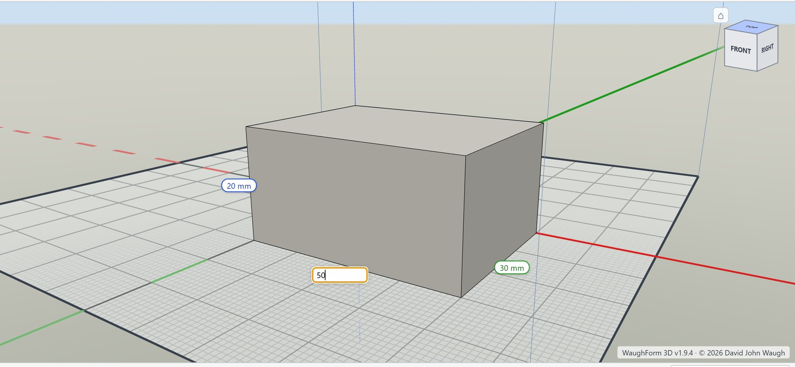
A box keeps its left, front and bottom where they are, and its other side moves. A rectangle keeps one corner where it is. A circle grows or shrinks around its centre.
Say you draw a rectangle on the ground, then two lines 3 mm in from each end, so it is split into three strips. To pull all three up 10 mm in one go:
10 and press Enter.They all rise together as one solid, with no walls left between the strips, so it is ready to print. Faces you have already selected with the Select tool work the same way. (Only faces facing the same way as the one you click are pushed with it.)
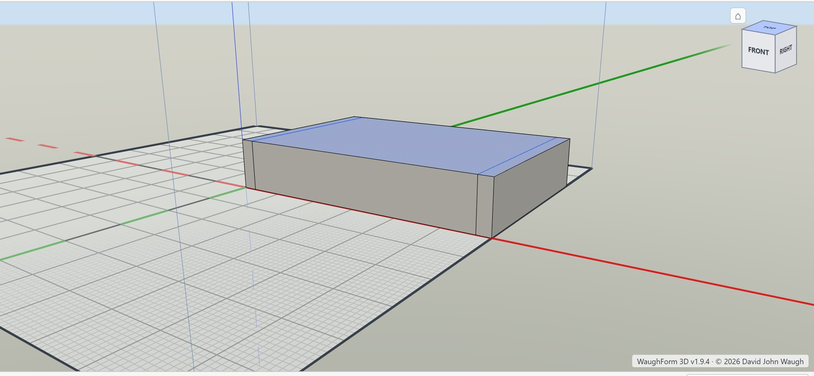
2cm or 5'6" work too.Polygon (N) draws flat shapes with straight sides: a hexagon to start with, or type 3s and Enter for a triangle, 8s for an octagon. Push/Pull a hexagon to make a nut trap or a prism.
3D Shapes (D) makes a whole solid at once. Pick Ball, Cone, Cylinder or Pyramid in the panel that opens on the right, click the centre on the ground or on a face, then the radius, then the height (a ball needs only its radius). You can type each size and press Enter instead. Each shape is its own group, ready to print.
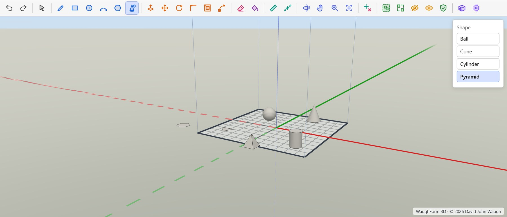
-2) offsets outside. Holes in the face stay with whichever part they end up in.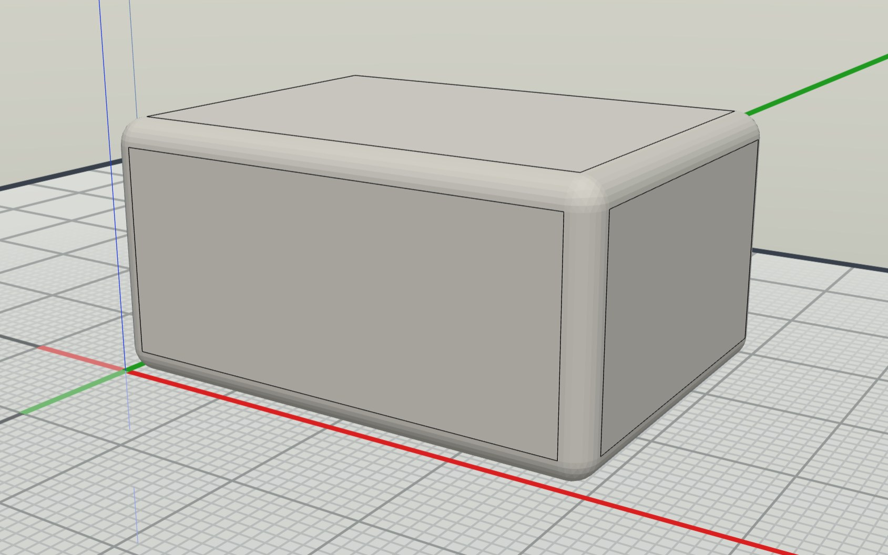
Follow Me pushes a flat shape along a route, like squeezing icing along a line. Pick the path first, then click the shape. Example: a ring.
20 and Enter: a flat circle.4 Enter (up); →, move outwards, 3 Enter; ↑, move down, 4 Enter; then ↓ and click the first point to close the square.A path can be one face (its outline is followed, as here) or lines: select the first and Shift+click the rest, as one unbroken chain. The shape must stand across the path (not lie along it), at the start of a line path or anywhere on an outline. A shape with a hole in it makes a tube.
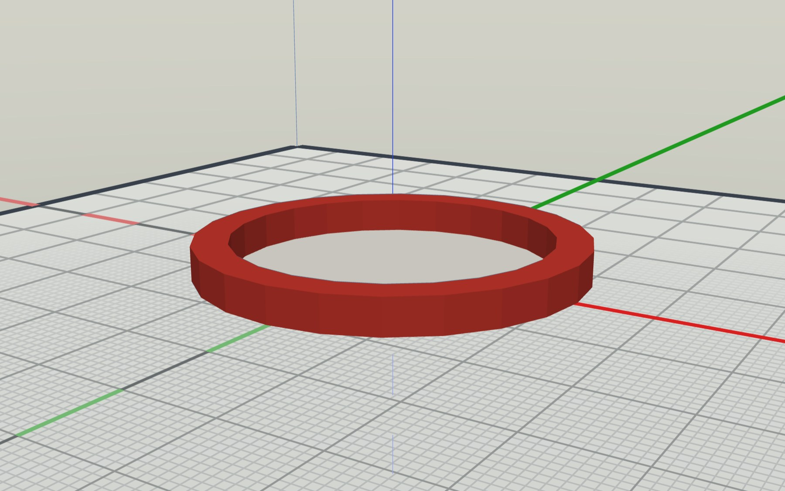
Something SketchUp doesn't have: Slice (X) cuts any closed solid in two, for example to print a tall part in two halves, to look inside, or to keep only the top of a box.
Each half is closed off with a flat face where it was cut and becomes its own group: move it with M, or click it with Select and press Delete. Undo (Ctrl+Z) puts the shape back together.
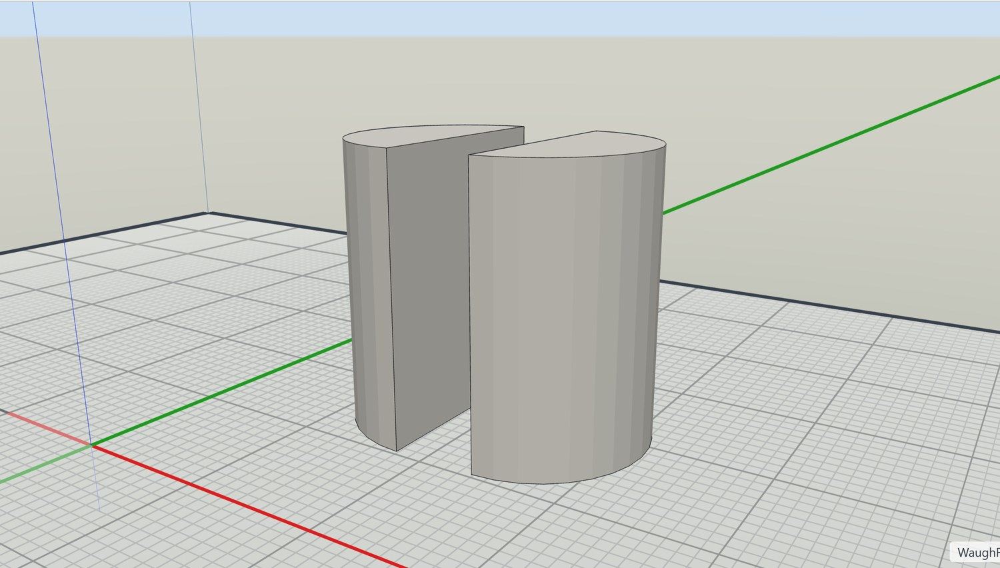
Select something and press Ctrl+C to copy it (or Ctrl+X to cut it). Ctrl+V pastes a copy just to the right of the original, selected and ready to move with M; paste again for more copies in a row. After a Cut, the first paste goes back where it was. Copy, Cut and Paste are also on the toolbar (grey, next to Undo) and in the right-click menu.
The quickest way to make a hole, a slot or a nut trap of any shape: stand the shape where the hole should be, then cut it out.
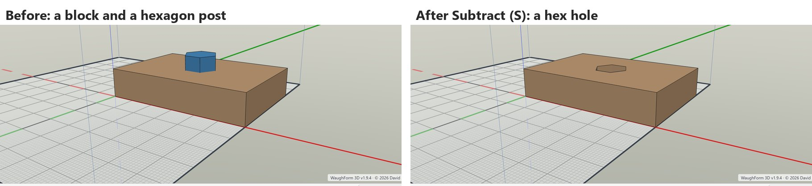
Intersect keeps only the part where the selected objects overlap, for example a ball and a box to make a dome. Both need closed solids; if nothing would be left, nothing is changed.
Select an object and click Flip / Mirror on the toolbar (or in the right-click menu):
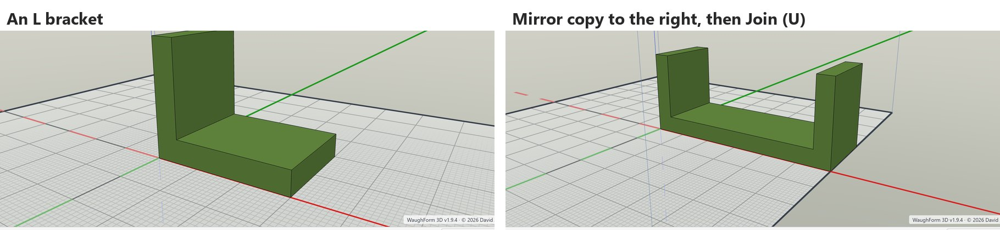
Choose Lay flat on the toolbar and click the face that should go down on the printer bed. The object turns over to lie on that face, at bed level. (Also in the right-click menu: Lay flat on this face.)
Put a label on anything, raised or engraved.
Raised text is its own object: to fuse it onto the shape, select both and press U. Engraved text is cut into the face you click (it needs a closed solid).
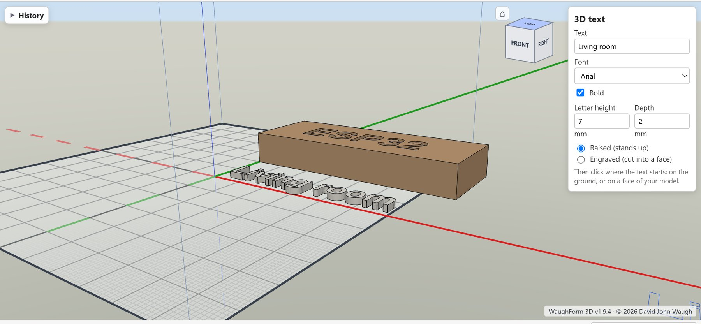
The Hole tool (the target icon) drills screw holes at sizes that work for 3D printing. Printed holes come out a little small, so its clearance holes are a touch bigger than the screw.
0 means right through).| Kind | What it's for | M3 sizes |
|---|---|---|
| Clearance | The screw slides through, into a nut or a part below. | Ø3.4 |
| Threaded | A real metric thread cut into the hole (see below). | M3 × 0.5 |
| Tapped | A smaller pilot hole: the screw cuts its own thread into the plastic. | Ø2.6 |
| Heat-set insert | For brass threaded inserts pressed in with a soldering iron (M2 to M5). | Ø4.0 × 6 deep |
| Countersunk | Flat-head screws sit flush with the surface. | Ø3.4 with a Ø6.5 cone |
| Counterbored | Cap-head screws sit below the surface. | Ø3.4 with a Ø6.1 × 3.3 step |
| Nut trap | A hex pocket holds the nut so it can't turn. | Ø3.4 with a 5.8 mm hex × 2.7 deep |
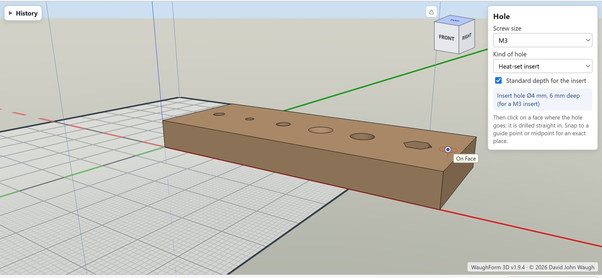
Choose Threaded and the hole gets a real metric thread at the standard coarse pitch (M3 × 0.5, M8 × 1.25, M12 × 1.75 and so on), cut right through or to the depth you set. It is cut 0.3 mm roomier than the screw, because printed threads come out a little tight, and a small cone at the mouth helps the screw start.
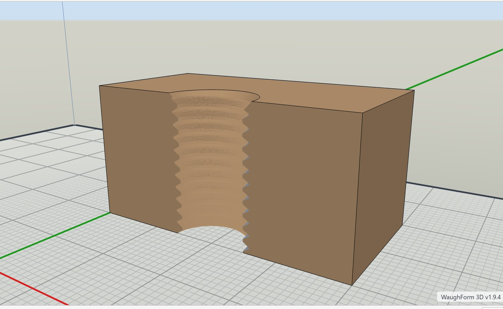
Turn a solid box into a tray or a case: choose Shell, type the wall thickness and press Enter (it starts at 2 mm), then click the face to leave open, e.g. the top.
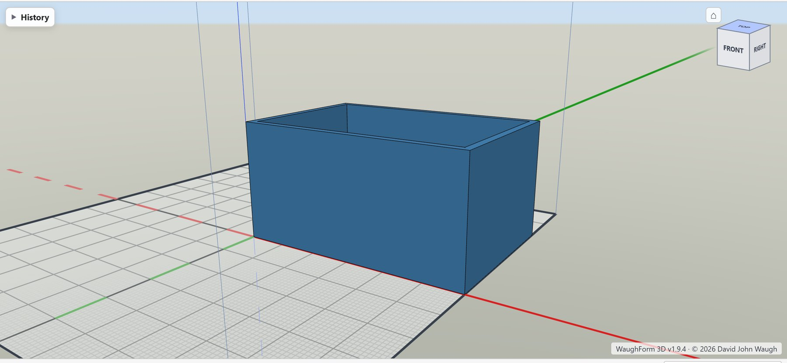
Click Check Model (the shield icon). It checks five things and marks any problem right on the model:
| Check | If there's a problem |
|---|---|
| Watertight | Gaps are shown with thick red lines. Click Fill holes, or trace the gap closed with the Line tool. |
| Faces point outward | Inside-out faces get orange outlines. Click Fix directions. |
| No loose lines | Lines that aren't part of a face won't print. Click Delete loose lines. |
| Nothing floating | A piece hanging in mid-air (not on the bed and not resting on another piece) fails the check, because a printer can't start a part on nothing. It says how far up it is: Move down to rest drops it onto what's below, and Show it selects it and zooms in. |
| Fits your printer | Use Resize to set the exact size, or Printer to change the bed size. Separate groups (such as a base and lid) are checked one at a time: the check gives the whole size and says each piece fits on its own. |
Zoom to problems takes you straight to anything that needs fixing. The check also opens by itself if a Save or Export finds a problem.
Click Export 3MF or Export STL, then open the file in Cura, PrusaSlicer, Bambu Studio, OrcaSlicer or any other slicer. Sizes are always in millimetres. If something is selected, only the selection is exported. In a 3MF file each separate piece becomes its own part, so the slicer can place them separately.
.3mf file. Any slicer can print it, and it opens again in WaughForm 3D fully editable..3mf and .stl files, including ones from other programs: flat areas become editable faces.Click Parts. The library holds the electronic parts you put in boxes: their size, the holes and sockets that matter, and their pins. It comes with an ESP32-S3 board, an INMP441 microphone, a MAX98357A amplifier, a 3 W speaker, a TP4056 charger, two batteries and a slide switch. Your own parts are saved on your computer.
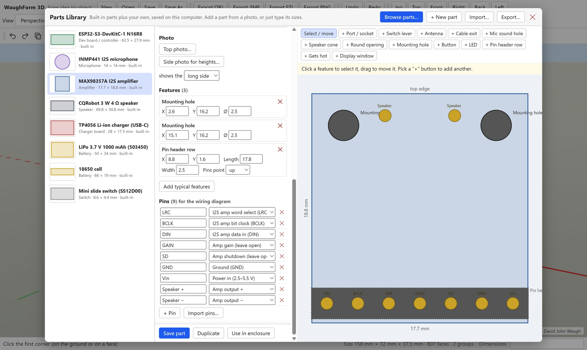
The quickest way to add a part: click Browse parts… at the top of the Parts Library (or Browse over 2,000 ready-made parts in the Enclosure Wizard). Over 2,000 parts come with WaughForm 3D, with their pins, sizes and pictures, so no internet or Fritzing is needed.
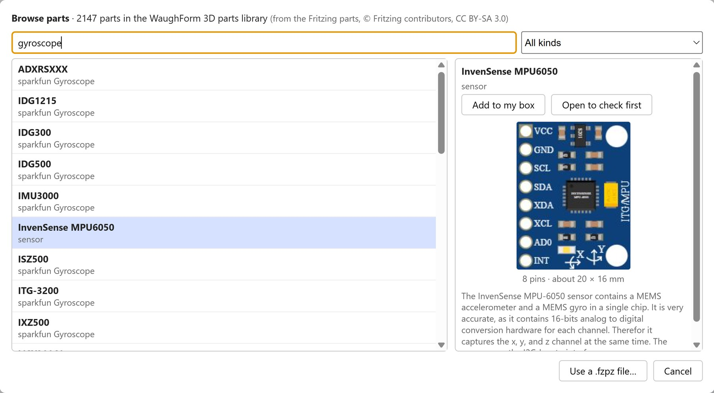
parts-library.json that comes with it. The browser keeps it, so it only asks once.| Feature | What the box gets |
|---|---|
| Port / socket | A hole in the wall so you can plug a cable in (USB-C, Micro-USB, DC barrel, jack…). The part is placed with that edge against a wall. |
| Mounting hole | A post with a screw hole (or a locating peg for parts on a wall). |
| Mic sound hole | A small hole so the microphone can hear outside. |
| Speaker cone | Slots (a grille) so the sound gets out. |
| Round opening | A round hole the part shows through: ultrasonic sensor "eyes", IR sensors, buzzers, camera lenses. |
| Button, LED, Display window | Holes in the lid to press, see or show through. |
| Antenna | Other parts are kept 10 mm clear of it, so Wi-Fi works well. |
| Pin header row | Kept clear of the supports; the Prototype style adds room for jumper plugs. |
| Gets hot | Vent slots in the lid above it. |
| Switch lever, Cable exit | A slot in the wall for a switch lever, or a notch for a cable. |
Usually mounted says whether the part lies flat on the floor or faces out through a wall (microphones, speakers, ultrasonic sensors). For wall parts, photograph the side that faces out. Side photo for heights… measures heights from a side-on photo: follow the steps in the yellow bar.
Turn part 90° (under the sizes) turns the whole part a quarter turn clockwise: its sizes, picture, features and pins move together. Use it if a part came in standing up; the long side should run left to right.
Save part, Duplicate, Delete and Use in enclosure stay pinned at the bottom of the details however far you scroll.
The Pins table at the bottom lists each pin and its role (power, ground, I2S clock, trigger, any signal…). The Wiring window works from these roles. Click + Pin to add one by hand.
Quicker: someone may already have made a part file (.fzpz) for your board, with all its pins, its size and a picture.
.fzpz that matches your board.A board drawn standing up is turned automatically so its long side runs left to right. Always check the pin roles, and measure the board: those pictures keep the pin spacing exact but are sometimes drawn smaller than the real board.
This is the only feature that uses the internet, and only when you click it. An AI looks the part up and fills in a draft, which you check before saving.
Both options need a "key" (a password for the AI service), which is kept on your computer only. Choose the AI in the blue Fill in automatically box at the top of a part.
| AI | Cost | Getting a key |
|---|---|---|
| Google Gemini | Free for everyday use; sometimes busy. | Click Set up free AI key…, then OK. In Google AI Studio sign in, click Create API key, copy it, and paste it into the app. |
| Claude | Paid per use from credit you add (roughly US$0.10–0.40 a look-up, an estimate). Usually more reliable. | At console.anthropic.com sign in, add credit under Billing, then Settings › API Keys › Create Key. Paste it with Set up Claude key…. |
If the look-up can't find the part, use Search images myself… to find a dimension drawing in Google Images, copy it, and press Ctrl+V in the part (or use Read a drawing…). The AI then reads the drawing.
Click Enclosure. Tell it which parts go in the box, and it designs the smallest printable box (base and lid) that fits them, with all the right holes.
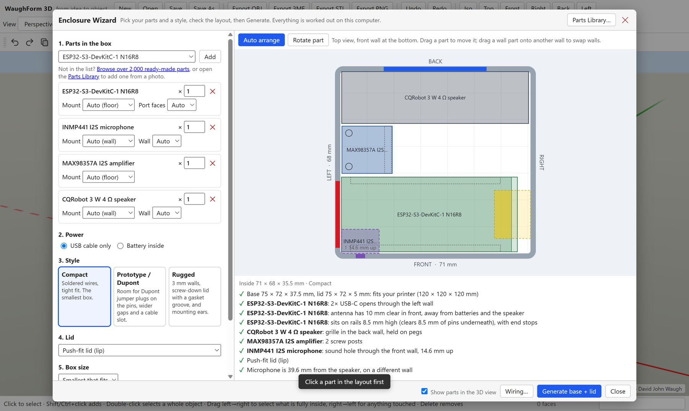
| Style | Best for |
|---|---|
| Compact | Wires soldered in place. The smallest, neatest box. |
| Prototype / Dupont | Still experimenting: room for push-on jumper wires, wider gaps and a cable slot. |
| Rugged | Thick 3 mm walls, a screw-down lid with a gasket groove, and mounting ears. |
Lids: push-fit (a lip that slides in), snap-fit (clicks on), or screws (4 × M3 self-tapping into corner posts). Base and lid are separate pieces, so print the lid first to check the fit.
The rules it follows: sockets go against a wall so the hole lines up; microphones face out, away from the speaker; antennas stay clear; chargers sit near batteries; nothing touches anything else.
Click Wiring (or Wiring… in the Enclosure Wizard). For the parts in your box it works out what wire goes where, using each part's pins.
Each board with its pins and coloured wires: red 5 V, orange battery, pink 3.3 V, black GND, other colours for signals. Drag boards to tidy it. Hover a wire in the list to find it in the picture. Save picture saves it as a PNG.
Tick each wire as you solder it; Save wiring list saves it to print. Code pins gives the matching pin settings for ESPHome and Arduino, ready to copy.
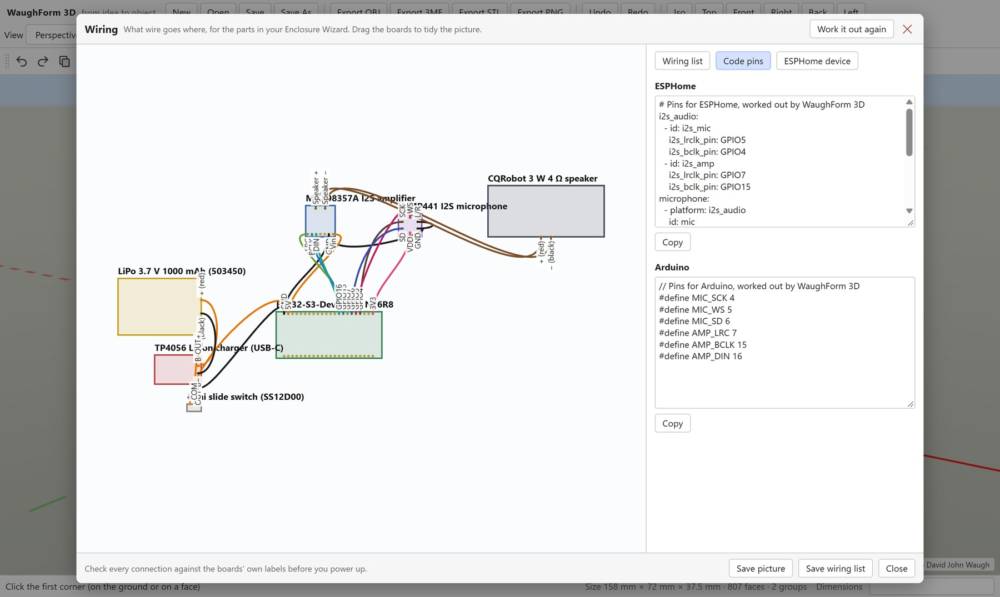
If the controller is an ESP32 (or ESP8266) board, the ESPHome device tab in the Wiring window writes the whole file ESPHome needs to program it, using the pins from this wiring, so the board and the wires always match.
Your Wi-Fi name and password are not in the file: it uses ESPHome's Secrets (wifi_ssid, wifi_password). Parts it knows get their own section (I2S microphone and amplifier, ultrasonic sensors, DHT11/DHT22 and DS18B20 temperature sensors, BME280, BMP280, AHT10/20 and SHT3x sensors, buttons, PIR motion sensors, LEDs, relays, buzzers, battery level) straight away. Any other part, such as one you imported from a part file, is handled by your AI: the tab lists it under "needs the AI", and one click on Make it with AI writes its code from the part's name, its part-file description and its pins. You don't need to know what the module is or how it works.
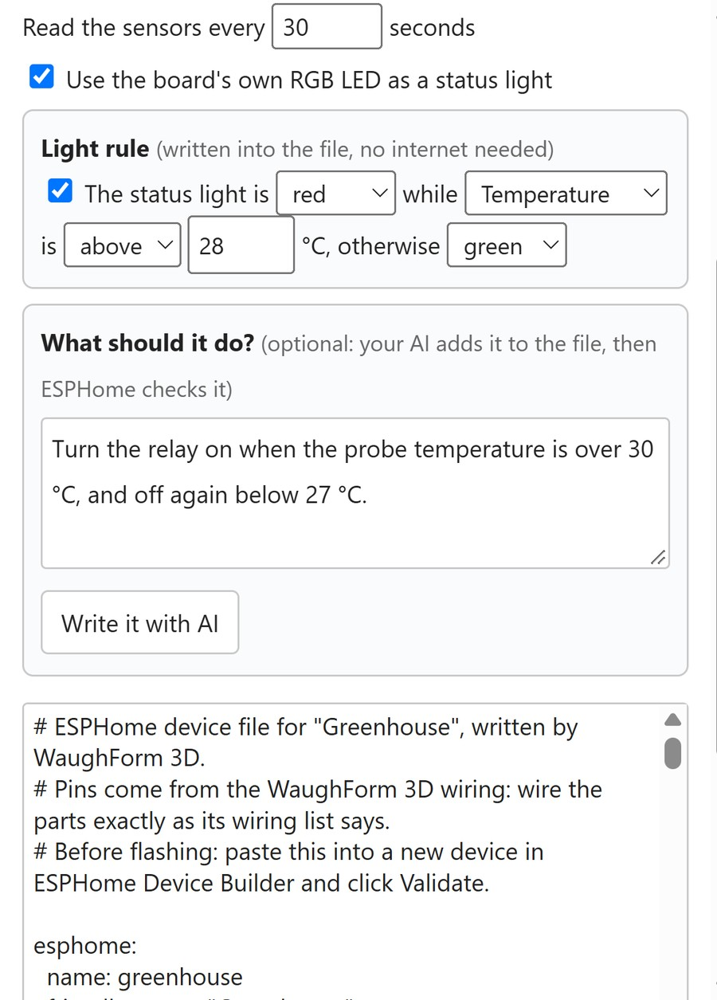
Light rule (no internet needed): tick it and fill in the sentence, for example The status light is red while Temperature is above 28 °C, otherwise green. It works with any reading the device has (temperature, humidity, distance, battery voltage…) and the board's RGB status light, or a plain LED (on/off).
What should it do? (uses your AI key): optional. If you leave it empty, Make it with AI just makes every part work and report its readings. Or describe it in your own words, for example "Turn the relay on when the probe is over 30 °C and off again below 27 °C", and click Make it with AI. Your AI (Gemini or Claude, set up in Parts) adds it to the file without touching the pins or Wi-Fi. ESPHome on this computer then checks the result; if it finds a mistake, the error goes back to the AI to fix, up to three tries. The panel shows ✓ when it passes, with the AI's own notes on what it added.
Always read an AI-written file through before installing it. Back to the plain file undoes it, and changing any answer goes back to the plain file too.
.3mf file you saved. Slicers print it, and WaughForm 3D opens it fully editable..json file; they click Import…. If your parts have photos you can export with or without them. Photos downloaded from websites belong to whoever took them, so choose Export without photos when sharing..exe with this manual, the README and the checksums file, or simply send the link to the GitHub download page. Each person sets up their own AI key if they want the online feature; keys are never shared.| Key | Does |
|---|---|
| Space | Select |
| L | Line |
| R | Rectangle |
| C | Circle |
| A | Arc |
| N | Polygon |
| D | 3D Shapes |
| P | Push/Pull |
| M | Move / Copy (hold Ctrl) |
| Q | Rotate |
| F | Offset |
| J | Round / Chamfer |
| W | Follow Me |
| X | Slice |
| E | Eraser |
| B | Paint Bucket |
| T | Tape Measure |
| K | Find Centre |
| O H Z | Orbit, Pan, Zoom |
| Key | Does |
|---|---|
| Shift+Z | Fit everything in view |
| G / Shift+G | Group / Ungroup |
| U | Join the selected objects into one solid |
| S | Subtract: cut the other selected objects out of the first one picked |
| Shift+H / Shift+U | Hide / Unhide all |
| Shift+E | Delete all guide points |
| → ← ↑ ↓ | Lock to X, Y, Z / unlock |
| Ctrl+Z / Ctrl+Y | Undo / Redo |
| Ctrl+S | Save (Shift for Save As) |
| Ctrl+O / Ctrl+N | Open / New |
| Ctrl+C / X / V | Copy / Cut / Paste |
| Ctrl+A / Ctrl+T | Select everything / nothing |
| Delete | Delete the selection |
| Esc | Cancel / close a window |
| F1 | Help |
| Right-click a text box | Cut, Copy, Paste text |
| Problem | What to do |
|---|---|
| The part is huge or tiny in the slicer | It was drawn with the wrong Units. Use Resize to set its real size in mm. |
| The slicer says the model isn't closed | Click Check Model, then Fill holes and Fix directions. |
| Nothing happens when I click to draw | Check which tool is highlighted on the toolbar. The left button always belongs to that tool. |
| The 3D view looks washed out | Windows HDR can do this. Try turning HDR off in Windows Settings › Display. |
| The Enclosure Wizard can't fit the parts | Try another style, set a part's mount or wall back to Auto, or choose a bigger size. |
| Look up online fills nothing in | Click Show AI reply to see what came back. "Busy" means try again later or switch AI; otherwise try the exact part number, or use Search images myself… and Read a drawing. |
| Follow Me says "First select the path" | Select the path with Space first (it turns blue), then press W and click the shape. |
| A rounding or offset is refused | Read the status bar: usually the size is too big for the face beside it. Type a smaller size and press Enter. |
| A part is missing from the wiring diagram | It has no pins yet. Add them in Parts, or use Import pins…. |
| Which version do I have? | Click About (top right), or look in the bottom-right corner of the 3D view. Copy version copies it, to paste into a message. |
| My work disappeared | The last drawing is saved automatically and comes back when you open the program. Keep important work saved as .3mf files too. |
WaughForm 3D was created by David John Waugh. © 2026 David John Waugh. It is free software: you can share it and change it under the GNU General Public License, version 3 or any later version. It comes with no warranty.
.fzpz file or the Fritzing parts library keep their credit (© Fritzing contributors, CC BY-SA 3.0) in the part's notes. The parts library that comes with WaughForm 3D (over 2,000 parts, with their pins and pictures) is made from the Fritzing parts library, © Fritzing contributors, licensed under CC BY-SA 3.0 (creativecommons.org/licenses/by-sa/3.0); parts made from it keep that credit and licence.